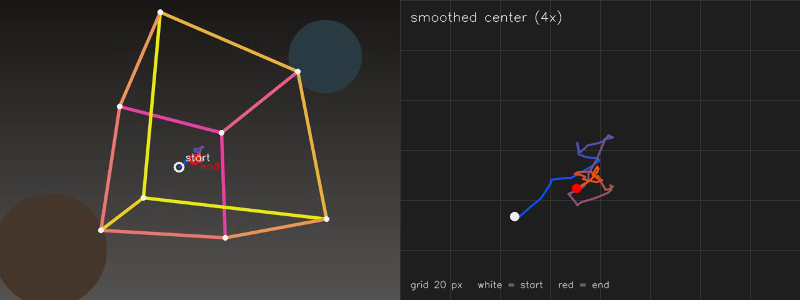

检测题
这一部分由一道综合例题和五道检测题组成。例题在 cube.mp4
上完成颜色掩码、形态学、轮廓筛选、碎片合并、重心跟踪、写视频与统计，
给出完整程序、真实输出和轨迹图；五道题分别检查 Mat 与 ROI、阈值与
形态学、轮廓筛选、去畸变与重投影、卡尔曼预测与更新。例题给出全部
实现，检测题要求先独立完成，再展开答案对照。
需要掌握 Mat 的读写与 ROI、图像平滑与阈值、形态学、轮廓与形状、 HSV 颜色阈值、视频读写；去畸变与重投影题用到针孔投影与去畸变， 卡尔曼题用到预测与更新。对应的课程是 1.1、 1.2、 1.3、 1.4、 1.5、 2.1、 2.2、 2.3、 3.1、 3.2、 3.3、 3.4、 3.5、 4.1、 4.5、 4.6、 5.1、 5.3、 5.4、 7.1、 7.6、 8.1、 8.2。
下面的命令在课程文件夹 lessons/opencv（本页所在目录）下执行。
/tmp 是系统存放临时文件的目录，电脑重启后可能被清空。
如果没有按第 0 部分 0.1 准备过练习目录，或者准备之后重启过电脑，
先执行下面几行，再开始这一部分：
rm -rf /tmp/opencv-course
mkdir -p /tmp/opencv-course
cp -r 示例代码 素材 /tmp/opencv-course/
cd /tmp/opencv-course/示例代码
第一行会删除整个练习副本，路径不要改成自己的目录。复制完成后，
用 pwd 确认当前目录是 /tmp/opencv-course/示例代码。
10.1综合例题：视频中的目标计数与轨迹
任务与数据
任务是在 素材/cube.mp4 中选定一种颜色，统计每一帧的目标
数量，绘制目标重心的轨迹，写出标注视频，并在控制台给出一段视频的
汇总。评价看三件事：计数在整段视频中是否稳定；漏检与误检能否从候选数、
目标数和中间结果解释；改动参数后能否复现同样的变化。
视频为 640×480、30 帧每秒、90 帧、
3.0 s。画面中央是一个线框立方体，棱分别用黄、橙、粉与
珊瑚色绘制；背景有两个虚化斑块。立方体绕自身中心旋转，位置基本不动。
粉色棱在多数帧构成一块较大的连通区域，因此选粉色作为检测颜色。黄色棱
也能检测，但断开的次数更多；橙色棱在部分帧转到背面，候选数会降到零。
背景的棕色斑块亮度低于 V=90，青色斑块饱和度与亮度都低，
两者都不进入掩码。
粉色跨过色相 0 点：一部分落在 150–179，另一部分
落在 0–6。因此颜色掩码由两次 inRange 的结果
按位或得到。只写一段范围会丢掉另一半像素，重心随可见棱的分布偏移。
流程与参数
整条流程分为八步，每一步都保留可检查的中间结果：
- 打开视频，读取宽、高、帧率与总帧数；打开失败时直接结束。
- 把每一帧从 BGR 转为 HSV，用两段色相范围生成粉色掩码。
- 对掩码做
9×9闭运算，连接棱上的断口与压缩产生的空洞。 - 提取外轮廓，按
contourArea去掉面积小于300 px²的噪点与短碎边，剩下的称为候选碎片。 - 按外接矩形的最近距离合并碎片：距离不超过
80 px的矩形 并为一组。合并后的组数就是这一帧的目标数。 - 对每组按碎片面积加权求重心，并取所有碎片外接矩形的并集作为目标框。
- 用最近邻关联上一帧的跟踪点：距离超过
80 px时重新初始化， 否则按0.12的系数做指数平滑。 - 在帧上画候选轮廓、目标框、测量点、跟踪点与轨迹，写入输出视频； 处理结束后保存轨迹图并打印统计。
第 5 步是计数稳定的关键。颜色掩码只覆盖立方体的一部分棱，单帧可能得到 一至五个互不相连的碎片；如果直接数轮廓，目标数会随立方体的转角变化。 按外接矩形间距合并后，同一立方体的碎片落在一组，目标数保持为一。合并 阈值不能随意放大：两个真正分开的目标也会被并成一组。
| 参数 | 程序中的值 | 作用 |
|---|---|---|
| 色相范围 | H 150–179 与 0–6 | 覆盖粉色跨过 0 点的两端 |
| 饱和度、明度下限 | S ≥ 90，V ≥ 90 | 排除低饱和与低亮度的背景斑块 |
| 闭运算核 | 9×9 矩形 | 连接棱上的断口与压缩空洞 |
| 最小面积 | 300 px² | 去掉压缩噪点与短碎边 |
| 合并间距 | 80 px | 把同一立方体的碎片并成一个目标 |
| 跟踪门限 | 80 px | 超过则放弃上一帧的位置，重新初始化 |
| 平滑系数 | 0.12 | 新测量在跟踪点中占的比例；越小越平稳 |
程序处理全部 90 帧，写出标注视频
素材/out_cube_track.mp4 与轨迹图
素材/out_cube_trajectory.png，并打印每 15 帧一行的
候选数、目标数与跟踪点坐标。轨迹图左侧是原始最后一帧与平滑轨迹，
右侧是平滑后重心轨迹的 4 倍放大图；颜色由蓝到红表示时间先后。
完整程序：
#include <algorithm>
#include <cmath>
#include <iomanip>
#include <iostream>
#include <numeric>
#include <string>
#include <vector>
#include <opencv2/core.hpp>
#include <opencv2/imgcodecs.hpp>
#include <opencv2/imgproc.hpp>
#include <opencv2/videoio.hpp>
namespace {
constexpr int kMinArea = 300;
constexpr double kGroupGap = 80.0;
constexpr double kGate = 80.0;
constexpr double kAlpha = 0.12;
struct Fragment {
double area = 0.0;
cv::Rect box;
cv::Point2f center;
std::vector<cv::Point> contour;
};
struct Target {
double area = 0.0;
cv::Rect box;
cv::Point2f center;
std::vector<int> parts;
};
double rectGap(const cv::Rect& a, const cv::Rect& b) {
const int left = std::max(a.x, b.x);
const int right = std::min(a.x + a.width, b.x + b.width);
const int top = std::max(a.y, b.y);
const int bottom = std::min(a.y + a.height, b.y + b.height);
const double dx = std::max(0, left - right);
const double dy = std::max(0, top - bottom);
return std::hypot(dx, dy);
}
int findRoot(std::vector<int>& parent, int index) {
while (parent[index] != index) {
parent[index] = parent[parent[index]];
index = parent[index];
}
return index;
}
void unite(std::vector<int>& parent, int a, int b) {
const int ra = findRoot(parent, a);
const int rb = findRoot(parent, b);
if (ra != rb) {
parent[rb] = ra;
}
}
std::vector<Target> groupFragments(const std::vector<Fragment>& fragments) {
const int count = static_cast<int>(fragments.size());
std::vector<int> parent(count);
std::iota(parent.begin(), parent.end(), 0);
for (int i = 0; i < count; ++i) {
for (int j = i + 1; j < count; ++j) {
if (rectGap(fragments[i].box, fragments[j].box) <= kGroupGap) {
unite(parent, i, j);
}
}
}
std::vector<Target> targets;
std::vector<int> roots;
for (int i = 0; i < count; ++i) {
const int root = findRoot(parent, i);
const auto found = std::find(roots.begin(), roots.end(), root);
int group = 0;
if (found == roots.end()) {
group = static_cast<int>(roots.size());
roots.push_back(root);
targets.push_back(Target());
} else {
group = static_cast<int>(found - roots.begin());
}
Target& target = targets[group];
target.area += fragments[i].area;
target.parts.push_back(i);
target.box = target.parts.size() == 1
? fragments[i].box
: target.box | fragments[i].box;
}
for (Target& target : targets) {
cv::Point2f sum(0.0F, 0.0F);
for (int index : target.parts) {
sum += fragments[index].center *
static_cast<float>(fragments[index].area);
}
target.center = sum / static_cast<float>(target.area);
}
return targets;
}
std::vector<Fragment> findFragments(const cv::Mat& hsv) {
cv::Mat low;
cv::inRange(hsv, cv::Scalar(150, 90, 90), cv::Scalar(179, 255, 255), low);
cv::Mat high;
cv::inRange(hsv, cv::Scalar(0, 90, 90), cv::Scalar(6, 255, 255), high);
cv::Mat mask;
cv::bitwise_or(low, high, mask);
cv::morphologyEx(mask, mask, cv::MORPH_CLOSE,
cv::getStructuringElement(cv::MORPH_RECT,
cv::Size(9, 9)));
std::vector<std::vector<cv::Point>> contours;
cv::findContours(mask, contours, cv::RETR_EXTERNAL,
cv::CHAIN_APPROX_SIMPLE);
std::vector<Fragment> fragments;
for (const std::vector<cv::Point>& contour : contours) {
const double area = cv::contourArea(contour);
if (area < kMinArea) {
continue;
}
const cv::Moments moments = cv::moments(contour);
if (moments.m00 <= 0.0) {
continue;
}
Fragment fragment;
fragment.area = area;
fragment.box = cv::boundingRect(contour);
fragment.center = cv::Point2f(
static_cast<float>(moments.m10 / moments.m00),
static_cast<float>(moments.m01 / moments.m00));
fragment.contour = contour;
fragments.push_back(fragment);
}
return fragments;
}
void drawHud(cv::Mat& frame, int index, int total, int targets,
int candidates) {
cv::rectangle(frame, cv::Rect(0, 0, 370, 34), cv::Scalar(20, 20, 20),
cv::FILLED);
const std::string text =
"frame " + std::to_string(index) + "/" + std::to_string(total) +
" targets " + std::to_string(targets) + " candidates " +
std::to_string(candidates);
cv::putText(frame, text, cv::Point(10, 24), cv::FONT_HERSHEY_SIMPLEX,
0.55, cv::Scalar(240, 240, 240), 1, cv::LINE_AA);
}
cv::Mat makeTrajectoryImage(const cv::Mat& last,
const std::vector<cv::Point2f>& trail) {
cv::Mat left = last.clone();
for (std::size_t i = 1; i < trail.size(); ++i) {
const double t = i / static_cast<double>(trail.size() - 1);
const cv::Scalar color(255.0 * (1.0 - t), 80.0, 255.0 * t);
cv::line(left, trail[i - 1], trail[i], color, 2, cv::LINE_AA);
}
if (!trail.empty()) {
cv::circle(left, trail.front(), 7, cv::Scalar(240, 240, 240), 2,
cv::LINE_AA);
cv::circle(left, trail.back(), 7, cv::Scalar(0, 0, 255), 2,
cv::LINE_AA);
cv::putText(left, "start", trail.front() + cv::Point2f(10, -10),
cv::FONT_HERSHEY_SIMPLEX, 0.55, cv::Scalar(240, 240, 240),
1, cv::LINE_AA);
cv::putText(left, "end", trail.back() + cv::Point2f(10, 16),
cv::FONT_HERSHEY_SIMPLEX, 0.55, cv::Scalar(0, 0, 255), 1,
cv::LINE_AA);
}
cv::Mat right(480, 640, CV_8UC3, cv::Scalar(30, 30, 30));
const cv::Point2f origin(320.0F, 240.0F);
const double zoom = 4.0;
const auto map = [&](const cv::Point2f& point) {
return cv::Point(
cvRound((point.x - origin.x) * zoom + right.cols / 2.0),
cvRound((point.y - origin.y) * zoom + right.rows / 2.0));
};
for (int step = -4; step <= 4; ++step) {
const int x = cvRound(right.cols / 2.0 + step * 20 * zoom);
const int y = cvRound(right.rows / 2.0 + step * 20 * zoom);
cv::line(right, cv::Point(x, 0), cv::Point(x, right.rows - 1),
cv::Scalar(55, 55, 55), 1);
cv::line(right, cv::Point(0, y), cv::Point(right.cols - 1, y),
cv::Scalar(55, 55, 55), 1);
}
for (std::size_t i = 1; i < trail.size(); ++i) {
const double t = i / static_cast<double>(trail.size() - 1);
const cv::Scalar color(255.0 * (1.0 - t), 80.0, 255.0 * t);
cv::line(right, map(trail[i - 1]), map(trail[i]), color, 2,
cv::LINE_AA);
}
if (!trail.empty()) {
cv::circle(right, map(trail.front()), 7, cv::Scalar(240, 240, 240),
cv::FILLED, cv::LINE_AA);
cv::circle(right, map(trail.back()), 7, cv::Scalar(0, 0, 255),
cv::FILLED, cv::LINE_AA);
}
cv::putText(right, "smoothed center (4x)", cv::Point(16, 34),
cv::FONT_HERSHEY_SIMPLEX, 0.7, cv::Scalar(230, 230, 230), 1,
cv::LINE_AA);
cv::putText(right, "grid 20 px white = start red = end",
cv::Point(16, 460), cv::FONT_HERSHEY_SIMPLEX, 0.5,
cv::Scalar(190, 190, 190), 1, cv::LINE_AA);
cv::Mat panel;
cv::hconcat(left, right, panel);
return panel;
}
} // namespace
int main() {
const std::string input = "../素材/cube.mp4";
cv::VideoCapture capture(input);
if (!capture.isOpened()) {
std::cout << "无法打开 " << input << '\n';
return 1;
}
const int width = cvRound(capture.get(cv::CAP_PROP_FRAME_WIDTH));
const int height = cvRound(capture.get(cv::CAP_PROP_FRAME_HEIGHT));
const double fps = capture.get(cv::CAP_PROP_FPS);
const int total = cvRound(capture.get(cv::CAP_PROP_FRAME_COUNT));
const std::string video_path = "../素材/out_cube_track.mp4";
cv::VideoWriter writer(video_path,
cv::VideoWriter::fourcc('m', 'p', '4', 'v'), fps,
cv::Size(width, height));
if (!writer.isOpened()) {
std::cout << "无法创建输出视频" << '\n';
return 1;
}
bool tracking = false;
cv::Point2f track(0.0F, 0.0F);
std::vector<cv::Point2f> trail;
std::vector<int> counts;
std::vector<int> candidates;
int detected = 0;
int missed = 0;
int reinit = 0;
cv::Mat last;
std::cout << "frames = " << total << '\n';
std::cout << "frame candidates targets cx cy\n";
int index = 0;
while (true) {
cv::Mat frame;
capture >> frame;
if (frame.empty()) {
break;
}
cv::Mat hsv;
cv::cvtColor(frame, hsv, cv::COLOR_BGR2HSV);
const std::vector<Fragment> fragments = findFragments(hsv);
const std::vector<Target> targets = groupFragments(fragments);
counts.push_back(static_cast<int>(targets.size()));
candidates.push_back(static_cast<int>(fragments.size()));
cv::Mat shown = frame.clone();
for (const Fragment& fragment : fragments) {
cv::drawContours(shown, std::vector<std::vector<cv::Point>>{
fragment.contour},
0, cv::Scalar(0, 220, 0), 1, cv::LINE_AA);
}
if (targets.empty()) {
++missed;
tracking = false;
} else {
int chosen = 0;
if (tracking) {
double best = -1.0;
for (int i = 0; i < static_cast<int>(targets.size()); ++i) {
const double distance = cv::norm(targets[i].center - track);
if (best < 0.0 || distance < best) {
best = distance;
chosen = i;
}
}
if (best > kGate) {
++reinit;
track = targets[chosen].center;
tracking = true;
} else {
track += (targets[chosen].center - track) *
static_cast<float>(kAlpha);
tracking = true;
}
} else {
chosen = 0;
for (int i = 1; i < static_cast<int>(targets.size()); ++i) {
if (targets[i].area > targets[chosen].area) {
chosen = i;
}
}
track = targets[chosen].center;
tracking = true;
}
++detected;
trail.push_back(track);
const Target& target = targets[chosen];
cv::rectangle(shown, target.box, cv::Scalar(0, 200, 255), 2);
cv::circle(shown, target.center, 4, cv::Scalar(0, 255, 255),
cv::FILLED, cv::LINE_AA);
cv::circle(shown, track, 5, cv::Scalar(0, 0, 255), cv::FILLED,
cv::LINE_AA);
for (std::size_t i = 1; i < trail.size(); ++i) {
cv::line(shown, trail[i - 1], trail[i],
cv::Scalar(255, 220, 0), 2, cv::LINE_AA);
}
}
drawHud(shown, index, total, static_cast<int>(targets.size()),
static_cast<int>(fragments.size()));
writer.write(shown);
if (index % 15 == 0) {
const cv::Point2f point =
targets.empty() ? cv::Point2f(0.0F, 0.0F) : track;
std::cout << std::setw(5) << index << " " << std::setw(10)
<< fragments.size() << " " << std::setw(7)
<< targets.size() << " " << std::fixed
<< std::setprecision(1) << std::setw(6) << point.x
<< " " << std::setw(6) << point.y << '\n';
}
last = frame.clone();
++index;
}
writer.release();
if (last.empty() || trail.empty()) {
std::cout << "没有读到有效帧" << '\n';
return 1;
}
double path = 0.0;
for (std::size_t i = 1; i < trail.size(); ++i) {
path += cv::norm(trail[i] - trail[i - 1]);
}
const cv::Point2f mean =
std::accumulate(trail.begin(), trail.end(), cv::Point2f(0.0F, 0.0F)) /
static_cast<float>(trail.size());
const auto x_bounds = std::minmax_element(
trail.begin(), trail.end(),
[](const cv::Point2f& a, const cv::Point2f& b) { return a.x < b.x; });
const auto y_bounds = std::minmax_element(
trail.begin(), trail.end(),
[](const cv::Point2f& a, const cv::Point2f& b) { return a.y < b.y; });
const auto count_bounds = std::minmax_element(counts.begin(), counts.end());
const auto candidate_bounds =
std::minmax_element(candidates.begin(), candidates.end());
std::cout << "detected = " << detected << " missed = " << missed << '\n';
std::cout << "targets: min = " << *count_bounds.first
<< " max = " << *count_bounds.second << '\n';
std::cout << "candidates: min = " << *candidate_bounds.first
<< " max = " << *candidate_bounds.second << '\n';
std::cout << "reinit = " << reinit << '\n';
std::cout << "trajectory points = " << trail.size() << '\n';
std::cout << "path length = " << std::fixed << std::setprecision(1) << path
<< " px\n";
std::cout << "track mean = (" << mean.x << ", " << mean.y << ")\n";
std::cout << "track range = x " << x_bounds.first->x << ".."
<< x_bounds.second->x << " y " << y_bounds.first->y << ".."
<< y_bounds.second->y << '\n';
const cv::Mat trajectory = makeTrajectoryImage(last, trail);
const std::string image_path = "../素材/out_cube_trajectory.png";
const bool image_saved = cv::imwrite(image_path, trajectory);
std::cout << "writer frames = " << index << '\n';
cv::VideoCapture reader(video_path);
if (!reader.isOpened()) {
std::cout << "回读失败" << '\n';
return 1;
}
std::cout << "readback frames = "
<< cvRound(reader.get(cv::CAP_PROP_FRAME_COUNT)) << '\n';
std::cout << "saved out_cube_track.mp4 = yes" << '\n';
std::cout << "saved out_cube_trajectory.png = "
<< (image_saved ? "yes" : "no") << " " << trajectory.cols << "x"
<< trajectory.rows << '\n';
return 0;
}在 示例代码 目录下编译并运行：
g++ -std=c++17 -Wall -Wextra 10.1-cube_track.cpp -o cube_track \
$(pkg-config --cflags --libs opencv4)
./cube_trackframes = 90
frame candidates targets cx cy
0 2 1 285.7 266.6
15 1 1 319.1 243.6
30 1 1 318.6 237.1
45 1 1 307.5 257.3
60 2 1 323.8 255.4
75 1 1 317.2 252.5
detected = 90 missed = 0
targets: min = 1 max = 1
candidates: min = 1 max = 5
reinit = 0
trajectory points = 90
path length = 187.8 px
track mean = (314.8, 249.1)
track range = x 285.7..325.0 y 234.1..266.6
writer frames = 90
readback frames = 90
saved out_cube_track.mp4 = yes
saved out_cube_trajectory.png = yes 1280x480
输出分为四段。第一行给出总帧数；表格每 15 帧取一行，列出该帧的候选 碎片数、合并后的目标数与跟踪点坐标；汇总段给出检出帧数、目标数范围、 候选数范围、重新初始化次数、轨迹点数、路径长度、重心均值与范围； 最后两行分别是输出视频与轨迹图的保存结果，回读帧数是倒数第三行。
targets 的最小值与最大值都是 1，说明合并步骤
把每一帧的碎片都归到了一个目标；candidates 在
1–5 之间变化，说明颜色掩码确实会随转角断开。
reinit = 0 表示最近邻关联的距离从未超过门限。
path length 是平滑后相邻轨迹点的距离之和，不是起点到终点
的位移；轨迹范围 x 285.7–325.0、y 234.1–266.6
说明立方体基本原地旋转，重心只在小范围内移动。

start 文字
标出起点，红色圆点与 end 文字标出终点，颜色由蓝到红
表示时间推进。右：轨迹的 4 倍放大图。立方体绕自身中心旋转，轨迹
集中在画面中部。
结果与评价
计数稳定来自两个层次的筛选：面积筛选去掉噪点，间距合并把同一目标的 碎片归组。只做面积筛选时，单帧的目标数会在一至五之间跳动；只做合并 而不做面积筛选时，压缩噪点会被合并进目标框，重心向外偏移。两项同时 使用，目标数才保持为一。
参数变化可以直接从汇总段读出。把最小面积从 300 提高到
1500，会有 4 帧没有任何候选，missed
从 0 变为 4；把最小面积降到 50，
会有一帧出现两个目标，targets 的最大值变为 2。
前者说明面积下限不能高于目标在最不利转角下的投影面积；后者说明下限
不能低到把压缩噪点当成目标。闭运算核也有类似的两端：核小于断口时棱
仍然断开，核过大时相邻的棱会连成一片，目标框与重心随之偏移。
轨迹的起点是第 0 帧的测量，前几帧从画面左下向中心收敛，之后在均值
(314.8, 249.1) 附近小幅移动。平滑系数 0.12
使单帧的测量跳动只影响跟踪点的一小部分，因此轨迹连续；系数过大时轨迹
会跟着每一帧的碎片分布抖动，系数过小时跟踪点滞后于真实位置。门限
80 px 用于区分“测量跳动”和“目标丢失”：超过门限时不再
平滑，而是把跟踪点重置到当前测量。
评价一条综合流程，不看单帧的标注是否整齐，而看整段视频的计数是否稳定、 漏检与误检能否由候选数、目标数和中间结果解释、改动参数后能否复现同样的 变化。这三点都可以由程序的输出、输出视频与轨迹图直接检查。
10.2五道检测题与答案
五道题覆盖 Mat 与 ROI、阈值与形态学、轮廓筛选、去畸变与重投影、 卡尔曼预测与更新。题目只使用课程素材与写在程序里的数据，不需要 标准输入。先独立写出结果，再展开答案对照；答案中的程序都可以直接 编译运行。
题 1 · Mat 与 ROI
下面这段程序在 4×5 的单通道矩阵上做浅拷贝、ROI 与克隆，
然后修改三处像素。要求写出 src、roi、
deep 的最终内容，并回答 shallow 是否与
src 共享数据。本题不需要标准输入，数据直接写在
main 里。
cv::Mat src = (cv::Mat_<uchar>(4, 5) <<
10, 20, 30, 40, 50,
60, 70, 80, 90, 100,
110, 120, 130, 140, 150,
160, 170, 180, 190, 200);
cv::Mat roi = src(cv::Rect(1, 1, 3, 2));
cv::Mat shallow = src;
cv::Mat deep = src.clone();
roi.setTo(0);
shallow.at<uchar>(0, 0) = 255;
deep.at<uchar>(3, 4) = 1;看答案
roi 是 src 的视图，roi.setTo(0)
把第 1–2 行、第 1–3 列清零；shallow = src 只复制矩阵头，
两者共享同一块像素，因此 shallow.at(0,0) = 255 也改了
src 的左上角；deep = src.clone() 复制了
像素，修改 deep 的右下角不影响 src。
#include <iomanip>
#include <iostream>
#include <string>
#include <opencv2/core.hpp>
namespace {
void print(const std::string& name, const cv::Mat& image) {
std::cout << name << " (" << image.rows << "x" << image.cols << ")\n";
for (int row = 0; row < image.rows; ++row) {
for (int col = 0; col < image.cols; ++col) {
std::cout << std::setw(4)
<< static_cast<int>(image.at<uchar>(row, col));
}
std::cout << '\n';
}
}
} // namespace
int main() {
cv::Mat src = (cv::Mat_<uchar>(4, 5) << 10, 20, 30, 40, 50, 60, 70, 80,
90, 100, 110, 120, 130, 140, 150, 160, 170, 180, 190, 200);
cv::Mat roi = src(cv::Rect(1, 1, 3, 2));
cv::Mat shallow = src;
cv::Mat deep = src.clone();
roi.setTo(0);
shallow.at<uchar>(0, 0) = 255;
deep.at<uchar>(3, 4) = 1;
print("src", src);
print("roi", roi);
print("deep", deep);
std::cout << "src.data == shallow.data: "
<< (src.data == shallow.data ? "yes" : "no") << '\n';
std::cout << "src.data == deep.data: "
<< (src.data == deep.data ? "yes" : "no") << '\n';
std::cout << "roi is a view: "
<< (roi.data >= src.data && roi.data < src.data + src.total()
? "yes"
: "no")
<< '\n';
return 0;
}src (4x5) 255 20 30 40 50 60 0 0 0 100 110 0 0 0 150 160 170 180 190 200 roi (2x3) 0 0 0 0 0 0 deep (4x5) 10 20 30 40 50 60 70 80 90 100 110 120 130 140 150 160 170 180 190 1 src.data == shallow.data: yes src.data == deep.data: no roi is a view: yes
src.data == shallow.data 为真，说明两者指向同一块
内存；src.data == deep.data 为假，说明克隆分配了新的
像素缓冲区。roi 的数据指针落在 src 的
缓冲区范围内，因此也是视图。
题 2 · 阈值与形态学
在 240×120 的单通道掩码上画以下内容，然后依次做
5×5 开运算与 9×9 闭运算。要求给出原始、
开运算后、闭运算后三个阶段的连通域数量与外接矩形。本题不需要标准
输入，数据直接写在 main 里。
- 矩形 A：左上角
(20,20)，宽高50×50； - 矩形 B：左上角
(90,20)，宽高50×50； - 横线：从
(69,44)到(90,44)，线宽2，连接 A 与 B； - 圆点：圆心
(210,30)，半径2； - 矩形 C：左上角
(20,80)，宽高30×30； - 矩形 D：左上角
(55,80)，宽高30×30，与 C 相隔5 px。
看答案
原始掩码有四个连通域：A 与 B 由横线连成一个，圆点单独一个，C、D 各
一个。5×5 开运算删除宽度为 2 的横线和半径
为 2 的圆点，A 与 B 分开，C 与 D 仍相隔 5 px，
因此仍有四个连通域。再对开运算结果做 9×9 闭运算，
C 与 D 之间的 5 px 间隙被填满，两个矩形并成一个，
连通域数量降为三。
#include <algorithm>
#include <iostream>
#include <string>
#include <vector>
#include <opencv2/core.hpp>
#include <opencv2/imgproc.hpp>
namespace {
struct Component {
int area = 0;
cv::Rect box;
};
void describe(const std::string& title, const cv::Mat& mask) {
cv::Mat labels;
cv::Mat stats;
cv::Mat centroids;
const int count = cv::connectedComponentsWithStats(
mask, labels, stats, centroids, 8, CV_32S);
std::vector<Component> components;
for (int label = 1; label < count; ++label) {
Component component;
component.area = stats.at<int>(label, cv::CC_STAT_AREA);
component.box = cv::Rect(stats.at<int>(label, cv::CC_STAT_LEFT),
stats.at<int>(label, cv::CC_STAT_TOP),
stats.at<int>(label, cv::CC_STAT_WIDTH),
stats.at<int>(label, cv::CC_STAT_HEIGHT));
components.push_back(component);
}
std::sort(components.begin(), components.end(),
[](const Component& a, const Component& b) {
return a.box.x != b.box.x ? a.box.x < b.box.x
: a.box.y < b.box.y;
});
std::cout << title << ": " << components.size() << '\n';
for (const Component& component : components) {
std::cout << " area=" << component.area << " box=("
<< component.box.x << "," << component.box.y << ","
<< component.box.width << "," << component.box.height
<< ")\n";
}
}
} // namespace
int main() {
cv::Mat mask(120, 240, CV_8UC1, cv::Scalar(0));
cv::rectangle(mask, cv::Rect(20, 20, 50, 50), cv::Scalar(255),
cv::FILLED);
cv::rectangle(mask, cv::Rect(90, 20, 50, 50), cv::Scalar(255),
cv::FILLED);
cv::line(mask, cv::Point(69, 44), cv::Point(90, 44), cv::Scalar(255), 2);
cv::circle(mask, cv::Point(210, 30), 2, cv::Scalar(255), cv::FILLED);
cv::rectangle(mask, cv::Rect(20, 80, 30, 30), cv::Scalar(255),
cv::FILLED);
cv::rectangle(mask, cv::Rect(55, 80, 30, 30), cv::Scalar(255),
cv::FILLED);
describe("raw", mask);
cv::Mat opened;
cv::morphologyEx(mask, opened, cv::MORPH_OPEN,
cv::getStructuringElement(cv::MORPH_RECT,
cv::Size(5, 5)));
describe("open 5x5", opened);
cv::Mat closed;
cv::morphologyEx(opened, closed, cv::MORPH_CLOSE,
cv::getStructuringElement(cv::MORPH_RECT,
cv::Size(9, 9)));
describe("close 9x9 after open", closed);
return 0;
}raw: 4 area=5060 box=(20,20,120,50) area=900 box=(20,80,30,30) area=900 box=(55,80,30,30) area=13 box=(208,28,5,5) open 5x5: 4 area=2500 box=(20,20,50,50) area=900 box=(20,80,30,30) area=900 box=(55,80,30,30) area=2500 box=(90,20,50,50) close 9x9 after open: 3 area=2500 box=(20,20,50,50) area=1950 box=(20,80,65,30) area=2500 box=(90,20,50,50)
开运算后的数量与原始相同，但连通域的组成已经改变：原始是
“A+B、圆点、C、D”，开运算后是“A、B、C、D”。只看数量会漏掉这个
变化，因此题目同时要求外接矩形。闭运算只填小间隙，不会把 A 与 C
之间 10 px 的空隙连起来。
题 3 · 轮廓筛选
下面的片段已经按面积筛掉小轮廓，并做了多边形逼近。要求补全四边形、
凸性、直角与边长比的判断，使程序在 素材/synth_blocks.png
中只保留正方形。阈值取：四个内角的余弦绝对值不超过 0.15，
最长边与最短边的比值不超过 1.20。输出每个候选的面积、
顶点数、边长比、最大余弦、重心与是否通过。本题不需要标准输入，
数据直接写在 main 里。
const double area = cv::contourArea(contour);
if (area < 1000.0) {
continue;
}
std::vector<cv::Point> poly;
cv::approxPolyDP(contour, poly, 0.02 * cv::arcLength(contour, true), true);
// 补全：四边形、凸、直角、边长比看答案
先判断 poly.size() == 4 且
cv::isContourConvex(poly) 为真；再依次取四条边，用
cv::norm 求长度，最长边除以最短边得到边长比；最后在
四个顶点处取相邻两条边的向量，用点积除以两个模长的乘积得到夹角
余弦的绝对值。边长比与最大余弦都在阈值内才保留。
#include <algorithm>
#include <cmath>
#include <iomanip>
#include <iostream>
#include <string>
#include <vector>
#include <opencv2/core.hpp>
#include <opencv2/imgcodecs.hpp>
#include <opencv2/imgproc.hpp>
namespace {
struct Candidate {
double area = 0.0;
cv::Rect box;
std::vector<cv::Point> poly;
double ratio = 0.0;
double max_cos = 0.0;
bool accepted = false;
};
double sideLength(const cv::Point& a, const cv::Point& b) {
return cv::norm(a - b);
}
} // namespace
int main() {
const std::string path = "../素材/synth_blocks.png";
const cv::Mat image = cv::imread(path, cv::IMREAD_COLOR);
if (image.empty()) {
std::cout << "无法读取：" << path << '\n';
return 1;
}
cv::Mat gray;
cv::cvtColor(image, gray, cv::COLOR_BGR2GRAY);
cv::Mat binary;
cv::threshold(gray, binary, 0, 255,
cv::THRESH_BINARY_INV | cv::THRESH_OTSU);
std::vector<std::vector<cv::Point>> contours;
cv::findContours(binary, contours, cv::RETR_EXTERNAL,
cv::CHAIN_APPROX_SIMPLE);
std::vector<Candidate> candidates;
for (const std::vector<cv::Point>& contour : contours) {
const double area = cv::contourArea(contour);
if (area < 1000.0) {
continue;
}
Candidate candidate;
candidate.area = area;
candidate.box = cv::boundingRect(contour);
const double perimeter = cv::arcLength(contour, true);
cv::approxPolyDP(contour, candidate.poly, 0.02 * perimeter, true);
if (candidate.poly.size() == 4 && cv::isContourConvex(candidate.poly)) {
std::vector<double> sides;
for (int i = 0; i < 4; ++i) {
sides.push_back(
sideLength(candidate.poly[i], candidate.poly[(i + 1) % 4]));
}
const auto bounds =
std::minmax_element(sides.begin(), sides.end());
candidate.ratio = *bounds.second / *bounds.first;
for (int i = 0; i < 4; ++i) {
const cv::Point v1 = candidate.poly[(i + 3) % 4] -
candidate.poly[i];
const cv::Point v2 = candidate.poly[(i + 1) % 4] -
candidate.poly[i];
const double cosine =
std::abs(v1.dot(v2)) /
(cv::norm(v1) * cv::norm(v2));
candidate.max_cos = std::max(candidate.max_cos, cosine);
}
candidate.accepted =
candidate.ratio <= 1.20 && candidate.max_cos <= 0.15;
}
candidates.push_back(candidate);
}
std::sort(candidates.begin(), candidates.end(),
[](const Candidate& a, const Candidate& b) {
return a.box.x != b.box.x ? a.box.x < b.box.x
: a.box.y < b.box.y;
});
std::cout << std::fixed << std::setprecision(1);
std::cout << "candidates = " << candidates.size() << '\n';
int selected = 0;
for (const Candidate& candidate : candidates) {
const cv::Moments moments = cv::moments(candidate.poly);
const double center_x = moments.m10 / moments.m00;
const double center_y = moments.m01 / moments.m00;
std::cout << " area=" << std::setw(6) << candidate.area
<< " vertices=" << candidate.poly.size();
if (candidate.poly.size() == 4) {
std::cout << " ratio=" << std::setprecision(2)
<< candidate.ratio << " max_cos="
<< candidate.max_cos;
} else {
std::cout << " ratio=-- max_cos=--";
}
std::cout << " center=(" << std::setprecision(1) << center_x << ","
<< center_y << ") accept="
<< (candidate.accepted ? "yes" : "no") << '\n';
if (candidate.accepted) {
++selected;
}
}
std::cout << "selected = " << selected << '\n';
return 0;
}candidates = 9 area=8100.0 vertices=4 ratio=1.00 max_cos=0.00 center=(140.0,140.0) accept=yes area=9580.0 vertices=8 ratio=-- max_cos=-- center=(160.0,600.0) accept=no area=8978.0 vertices=4 ratio=1.00 max_cos=0.00 center=(200.0,380.0) accept=yes area=9964.0 vertices=4 ratio=1.00 max_cos=0.00 center=(380.0,140.0) accept=yes area=7821.0 vertices=4 ratio=2.18 max_cos=0.00 center=(430.0,600.0) accept=no area=10474.0 vertices=4 ratio=2.18 max_cos=0.00 center=(450.0,380.0) accept=no area=7312.0 vertices=4 ratio=1.00 max_cos=0.00 center=(650.0,150.0) accept=yes area=14444.0 vertices=4 ratio=1.79 max_cos=0.00 center=(700.0,600.0) accept=no area=11331.0 vertices=4 ratio=1.73 max_cos=0.01 center=(720.0,400.0) accept=no selected = 4
九个候选中，圆点的逼近结果是八个顶点，直接排除；三个长条矩形的
边长比分别为 2.18、1.79、1.73，
超过 1.20；四个正方形的边长比都是 1.00，
最大余弦都是 0.00，全部通过。0.01 属于
边长比 1.73 的长条候选，它已因边长比被拒绝。旋转
45° 的绿色菱形也是正方形，因此被保留。
题 4 · 去畸变与重投影
给定相机矩阵
K = [[800, 0, 320], [0, 800, 240], [0, 0, 1]]、畸变系数
D = [-0.25, 0.08, 0.001, -0.0005, 0] 与像素坐标
(420, 180)。要求：
- 用
undistortPoints求去畸变后的归一化坐标； - 把归一化坐标当作
Z=1的三维点，用projectPoints投回像素，报告重投影误差； - 用同一组
K、D投影三维点(0.2, -0.1, 2.0)。
本题不需要标准输入，数据直接写在 main 里。
看答案
undistortPoints 不做透视除法以外的像素映射；不给
P 时输出归一化坐标。把归一化坐标补成 Z=1
的点，再交给 projectPoints，后者会重新应用畸变，因此
投回的像素与原像素一致。undistortPoints 若把
P 设为 K，输出的是理想针孔模型下的像素，
不再加畸变，所以它与原像素不相等；这一点容易误判，应以
projectPoints 的结果为准。
#include <cmath>
#include <iomanip>
#include <iostream>
#include <vector>
#include <opencv2/calib3d.hpp>
#include <opencv2/core.hpp>
int main() {
const cv::Mat camera = (cv::Mat_<double>(3, 3) << 800.0, 0.0, 320.0,
0.0, 800.0, 240.0, 0.0, 0.0, 1.0);
const cv::Mat distortion =
(cv::Mat_<double>(1, 5) << -0.25, 0.08, 0.001, -0.0005, 0.0);
const std::vector<cv::Point2f> pixels = {cv::Point2f(420.0F, 180.0F)};
std::vector<cv::Point2f> normalized;
cv::undistortPoints(pixels, normalized, camera, distortion);
std::vector<cv::Point2f> mapped;
cv::undistortPoints(pixels, mapped, camera, distortion, cv::noArray(),
camera);
const std::vector<cv::Point3d> ray = {
cv::Point3d(normalized[0].x, normalized[0].y, 1.0)};
const std::vector<cv::Point3d> point = {cv::Point3d(0.2, -0.1, 2.0)};
const cv::Mat rvec = cv::Mat::zeros(3, 1, CV_64F);
const cv::Mat tvec = cv::Mat::zeros(3, 1, CV_64F);
std::vector<cv::Point2d> ray_pixel;
std::vector<cv::Point2d> point_pixel;
cv::projectPoints(ray, rvec, tvec, camera, distortion, ray_pixel);
cv::projectPoints(point, rvec, tvec, camera, distortion, point_pixel);
std::cout << std::fixed << std::setprecision(4);
std::cout << "normalized = (" << normalized[0].x << ", "
<< normalized[0].y << ")\n";
std::cout << "mapped pixel = (" << mapped[0].x << ", " << mapped[0].y
<< ")\n";
std::cout << "project normalized -> (" << ray_pixel[0].x << ", "
<< ray_pixel[0].y << ")\n";
std::cout << "reprojection error = "
<< std::hypot(ray_pixel[0].x - pixels[0].x,
ray_pixel[0].y - pixels[0].y)
<< " px\n";
std::cout << "project (0.2, -0.1, 2.0) -> (" << point_pixel[0].x << ", "
<< point_pixel[0].y << ")\n";
return 0;
}normalized = (0.1257, -0.0754) mapped pixel = (420.5732, 179.6440) project normalized -> (420.0000, 180.0000) reprojection error = 0.0000 px project (0.2, -0.1, 2.0) -> (399.7300, 200.1425)
归一化坐标为 (0.1257, -0.0754)；按 Z=1
投回得到 (420.0000, 180.0000)，误差为
0.0000 px。三维点 (0.2, -0.1, 2.0)
的投影为 (399.7300, 200.1425)，与无畸变时的
(400, 200) 相差约 0.3 px，差值来自
径向与切向畸变。
题 5 · 卡尔曼
一维匀速模型的状态为 x = [位置, 速度]^T，初始
x = [10, 2]^T、P = diag(4, 1)，采样间隔
dt = 0.5，过程噪声 Q = diag(0.1, 0.02)。
观测矩阵 H = [1, 0]，观测值 z = 11.5，
观测噪声 R = 0.5。要求写出预测后的状态与协方差、
新息、新息协方差、卡尔曼增益，以及更新后的状态与协方差。
本题不需要标准输入，数据直接写在 main 里。
看答案
预测使用 x' = F x、P' = F P F^T + Q，
其中 F = [[1, dt], [0, 1]]；更新使用
y = z - H x'、S = H P' H^T + R、
K = P' H^T / S、x = x' + K y、
P = (I - K H) P'。位置预测为
10 + 0.5×2 = 11，速度保持 2；
观测比预测大 0.5，增益约 0.897，
更新后的位置为 11.4485。
#include <iomanip>
#include <iostream>
int main() {
const double dt = 0.5;
const double x0 = 10.0;
const double x1 = 2.0;
const double p00 = 4.0;
const double p01 = 0.0;
const double p10 = 0.0;
const double p11 = 1.0;
const double q0 = 0.1;
const double q1 = 0.02;
const double measurement = 11.5;
const double r = 0.5;
const double predicted_x0 = x0 + dt * x1;
const double predicted_x1 = x1;
const double predicted_p00 = p00 + dt * (p01 + p10) +
dt * dt * p11 + q0;
const double predicted_p01 = p01 + dt * p11;
const double predicted_p10 = p10 + dt * p11;
const double predicted_p11 = p11 + q1;
const double innovation = measurement - predicted_x0;
const double s = predicted_p00 + r;
const double k0 = predicted_p00 / s;
const double k1 = predicted_p10 / s;
const double updated_x0 = predicted_x0 + k0 * innovation;
const double updated_x1 = predicted_x1 + k1 * innovation;
const double updated_p00 = predicted_p00 - k0 * predicted_p00;
const double updated_p01 = predicted_p01 - k0 * predicted_p01;
const double updated_p10 = predicted_p10 - k1 * predicted_p00;
const double updated_p11 = predicted_p11 - k1 * predicted_p01;
std::cout << std::fixed << std::setprecision(4);
std::cout << "predict:\n";
std::cout << " x = (" << predicted_x0 << ", " << predicted_x1 << ")\n";
std::cout << " P = [[" << predicted_p00 << ", " << predicted_p01
<< "], [" << predicted_p10 << ", " << predicted_p11 << "]]\n";
std::cout << "update:\n";
std::cout << " innovation = " << innovation << '\n';
std::cout << " S = " << s << '\n';
std::cout << " K = (" << k0 << ", " << k1 << ")\n";
std::cout << " x = (" << updated_x0 << ", " << updated_x1 << ")\n";
std::cout << " P = [[" << updated_p00 << ", " << updated_p01 << "], ["
<< updated_p10 << ", " << updated_p11 << "]]\n";
return 0;
}predict: x = (11.0000, 2.0000) P = [[4.3500, 0.5000], [0.5000, 1.0200]] update: innovation = 0.5000 S = 4.8500 K = (0.8969, 0.1031) x = (11.4485, 2.0515) P = [[0.4485, 0.0515], [0.0515, 0.9685]]
Q 增大表示更相信观测，增益与位置修正量都会变大；
R 增大表示更相信模型，增益变小，更新后的位置更接近
预测值。协方差更新后，位置方差从 4.35 降到
0.4485，说明这一帧观测提供了有效信息。
你现在能写什么：用一条完整流程处理视频：读取属性并逐帧循环； 用 HSV 两段范围生成颜色掩码；用闭运算与面积筛选得到候选碎片；按外接 矩形间距把同一目标的碎片合并；用面积加权重心与最近邻关联跟踪目标； 用指数平滑抑制测量跳动；写出标注视频与轨迹图并打印统计；独立完成 Mat 与 ROI、阈值与形态学、轮廓筛选、去畸变投影与卡尔曼预测更新五类 检测题。